|
CampusBot 2005. Valencia |
Y por fin llegó el sábado!!!! El último día de la Campus!!!!! La primera de todas las actividades era el concurso del mogollón, en la que participaban todos los asistentes al taller. En la foto de la izquierda se pueden ver algunos de los robots que concursaron.
El concurso del mogollón es muy simple. Todos los robots se meten en un recinto blanco delimitado por cinta aislante negra. Las posiciones de los robots dentro de este recinto se sortean, y la dirección hacia la que debe apuntar el robot se escoge aleatoriamente. Gana el primer robot que sea capaz de salir del recinto.
Normalmente se suelen crear grandes melés de robots, luchando unos contra otros. Por ello es fundamental el papel del “Dinamizador”. Un robot con una cámara y que está telecontrolado desde un PC. En la foto de la derecha vemos a Ivan preparando al robot Observer para ejercer de dinamizador. Una vez que haya salido el ganador, el dinamizador no tendrá piedad... irá a saco a por todos los robots... ¡¡Esto es la guerra!! :-)
|
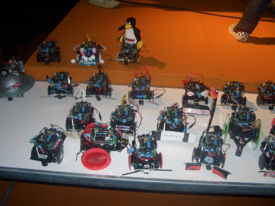 |
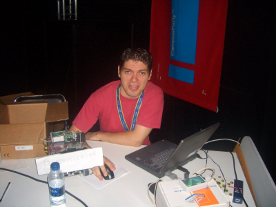 |
En la foto de la izquierda podemos ver a los robots en acción. Es difícil que estén aislados... normalmente están enganchados unos con otros... y el dinamizador dando cañita... En realidad, más que un concurso es una pachanga, una oportunidad para poder ver 30 ó más robots funcionando a la vez.
Al final, nos hicimos una foto de familia (foto de la derecha). Y terminamos el concurso con el grito de guerra ¡¡PAAAAACHIIIIIIIIIIIII!!
|
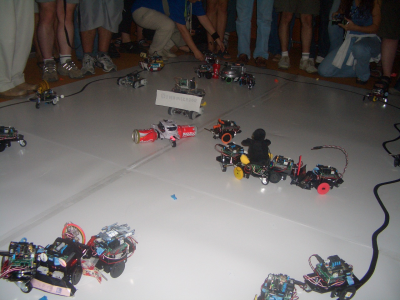 |
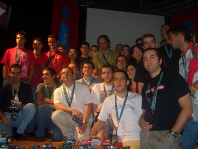 |
Después del mogollón comenzaba la final de rastreadores. En la izquierda vemos a Jose Pichardo, Juanma De Castro y Pepe Ariza preparándolo todo. En la derecha están los jueces: Julio Pastor, JuanMa De Castro y Alejandro Alonso.
|
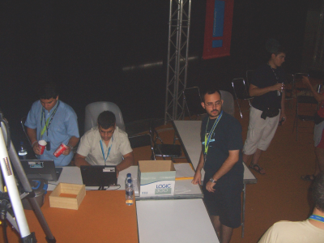 |
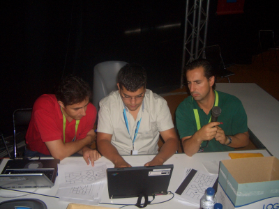 |
Las finales estuvieron muy reñidas. El nivel era muy alto. Al final los tres primeros puestos fueron para estudiantes de la Universidad de Málaga. Son los que están junto a Alejandro en la foto de la derecha.
|
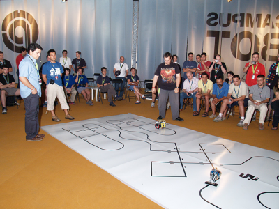 |
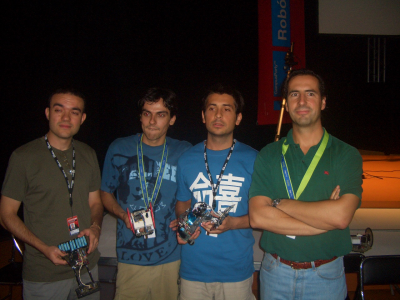 |
Luego empezaron las finales de SUMO. Al final sólo se apuntaron 5 robots, pero qué robots... eran la caña!!! Los mejores de España!!! El ganador fue Raul Galbani, de Barcelona, con su luchador Pegasus. En la derecha están Alejandro Alonso y Miguel Angel Expósito entregándole el premio de 1200€!!
|
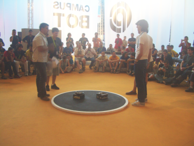 |
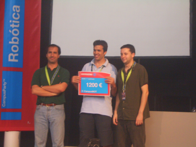 |
Al terminar todos los concursos, nos hicimos una foto de familia. (foto de la izquierda). Luego, Julio Pastor dió una charla sobre el concurso Europeo de Robótica Eurobot y clausuramos la CampusBot con la mesa redonda “Robótica. Cómo iniciarse... y continuar”. (Foto de la derecha)
|
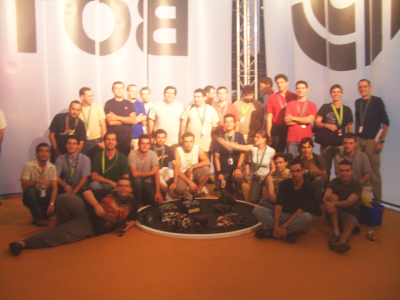 |
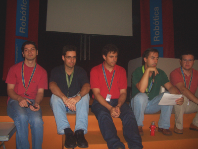 |
y con esto... ¡¡ se cerró la CAJA DE PANDORA!!
Habíamos acabo exhaustos. Habíamos dormido poco. Había estado en tensión durante muchos días... pero la CampusBot ha sido una de las mejores experiencias que he tenido. Nunca antes en España se habían reunidos tantos aficionados , profesionales y locos por la robótica.
|
|
Tengo que agradecer sobre todo a la persona que ha hecho posible que ahora pueda estar escribiendo esta bitácora: Alejando Alonso. Si no es por tí, por tu entusiasmo, por tu visión de futuro y sobre todo por tu carisma, nunca habría existido una CampusBot. ¡¡Muchísimas Gracias!!
Al creador del robot Skybot, utilizado en el taller de robótica, Andrés Prieto-Moreno. Sólo por tu experiencia en robótica, por tu constancia en el trabajo, por tu entusiasmo, tu disponibilidad y tu talento, ha sido posible la existencia del Skybot. Sin ese robot, no habría habido un taller de robótica tan excepcional. ¡Muchas gracias! ... ¡ah! y muchísimas gracias por solucionarnos el marrón de la pérdida del portátil y las llaves dentro del maletero!!! No sé qué habríamos hecho sin tu ayuda ;-)
A Jose Pichardo, de Cádiz. ¡Picha!, no sé qué habríamos hecho sin ti!! Nos solucionaste todos los marrones!!! Siempre estabas dispuesto a ayudar en lo que fuera!!. ¡Muchas gracias! También por toda la documentación que te curraste para el taller.
A Miguel Ángel Expósito, por la fantástica documentación del taller que imprimió en color y por toda la ayuda que nos prestó. ¡¡Muchísimas gracias!!
A Iván González por su ayuda en todo: concursos, taller y conferencias. ¡Ah! y por el Dinamizador del concurso de mogollón!! :-). ¡¡Muchas gracias!!
A Daniel Álvarez y Daniel Calvo, por el software que realizaron para la prueba del robot del taller, por su ayuda en el taller y en los concursos. ¡Muchas gracias!
Al “Málaga team”: Pepe Ariza, Jose Manuel Peula, José Antonio Zumaquero y Francisco García. Muchas gracias por dejaros literalmente la piel en la campus. Nos ayudásteis en todo: taller, concursos, organización, conferencias... y encima hicistéis una demo/charla del Aibo y de la realidad aumentada. ¡Muchísimas gracias!
A Ricardo Gómez. Tío, gracias por todo!! Siempre estabas ahí ayudando y apoyando. ¡Muchas gracias! ¡ah! y también muchas gracias por hacernos pasar esos ratos tan divertidos (léase: “Me partí con lo del flan con nuez”) jajajajajajajajaj
A Julio Pastor y sus dos colaboradores, Javier rodríguez y Óscar González. Vuestra ayuda para la organización de los concursos fue imprescindible. Y muchas gracias por vuestra disponibilidad! Perdonad que no recuerde vuestro nombres. Lo sé, soy lo peor :-(
A Juanma de Castro. Gracias por venir a la campus para dar una charla/demo de los robots PI y por comerte el marrón de hacer de árbitro en el concurso de sumo. ¡Lo hiciste genial! ¡Muchísimas gracias!
A Nera González (y tu novio que no recuerdo el nombre!! Sorry!!), por vuestra disponibilidad y ayuda con los medios de comuniación :-) y los concursos.
23/Sep/2005: Publicada la página en esta web